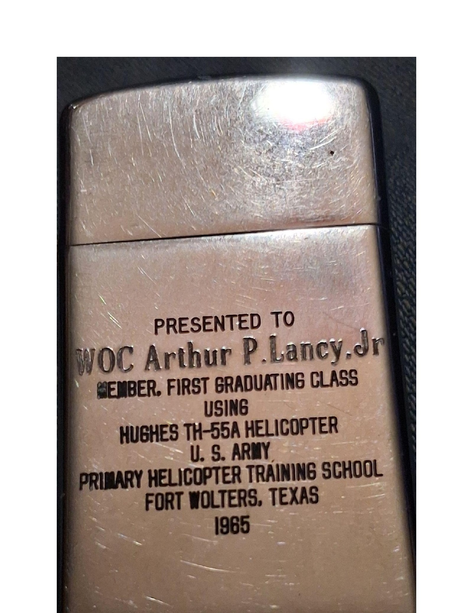
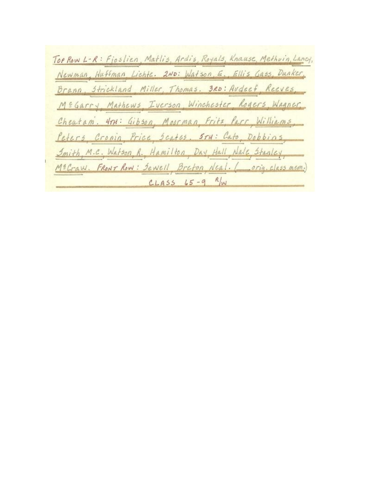

Executive Summary
This document provides a comprehensive and factual overview of the 1965 Fort Wolters Commemorative Lighter, an authenticated artifact that encapsulates a pivotal moment in U.S. Army Aviation history. This unique presentation piece, originally belonging to Warrant Officer Candidate (WOC) Arthur P. Lancy Jr., serves as a tangible link to the inaugural class of helicopter pilots trained on the Hughes TH-55A Osage at Fort Wolters, Texas. Its verified provenance, historical significance, and exceptional condition position it as a highly valuable collectible.
Artifact Identification
| Attribute | Detail |
|---|---|
| Object | 1965 Park Industries Presentation Lighter |
| Reference ID | FW-ARC-0001 / ALJ-65-9WA-COA-001 |
| Manufacturer | Park Industries, Murfreesboro, Tennessee, U.S.A. |
| Material | Brushed Metal Alloy (Chromed) |
| Era | 1965 (Vietnam War Era) |
| Condition | Museum Quality / Excellent |
| Functional Status | Operational |
Historical Context: The Dawn of a New Era in Army Aviation
The Fort Wolters Primary Helicopter Training School in Texas was a critical institution for the U.S. Army from 1956 to 1973, responsible for training over 40,000 helicopter pilots during the Vietnam War era. A significant turning point occurred in 1965 with the introduction of the Hughes TH-55A Osage as the primary training helicopter, replacing earlier models. This transition marked a revolutionary advancement in helicopter training methodology, directly contributing to the rapid expansion of Army Aviation capabilities during a period of intense global conflict.
This commemorative lighter was presented to a member of Class 65-9WA, the first graduating class to train exclusively on the TH-55A Osage. This makes the artifact exceptionally significant, as it symbolizes the beginning of a new chapter in Army aviation and the rigorous training undertaken by these pioneering aviators.
Recipient and Verified Provenance
The lighter is engraved to Warrant Officer Candidate Arthur P. Lancy Jr., a participant in the Warrant Officer Candidate (WOC) program. This program was designed to train enlisted soldiers and junior officers to become Army aviators, culminating in their commissioning as Warrant Officers upon graduation. The personal engraving elevates the artifact beyond a generic military souvenir, connecting it directly to an individual's service and achievement.
Crucially, WOC Lancy Jr.'s military service record has been thoroughly authenticated through official Army archives. Records confirm that he was awarded the Air Medal for meritorious achievement in aerial flight on April 3, 1967, while serving with Company B, 25th Aviation Battalion, 25th Infantry Division, during the Vietnam War. This documented service trajectory, from specialized training at Fort Wolters to combat distinction, provides an exceptionally compelling and verifiable historical narrative, enhancing the artifact's authenticity and value.
Chain of Custody
Original recipient (WOC Arthur P. Lancy Jr.) → Private collection → Current archive (Acquired November 15, 2024)
Technical Specifications and Markings
This vintage Park Brand Petrol Lighter features precise engravings that confirm its historical context:
The lighter bears authentic manufacturing marks from Park Industries, Murfreesboro, Tennessee, consistent with 1960s production standards. The engravings exhibit period-accurate typography and depth, confirming its contemporary manufacture and not a later reproduction.
Valuation and Rarity
This 1965 Fort Wolters Commemorative Lighter is considered an investment-grade military collectible due to its confluence of historical significance, verified provenance, and exceptional rarity.
Key Factors Contributing to Value
- Historical Rarity: Presentation lighters from the first graduating class of a new, pivotal military training program are exceptionally rare. Most military presentation pieces from this era were either lost, destroyed, or remain in private collections with limited documentation.
- Documented Combat Service: The direct link to WOC Arthur P. Lancy Jr. and his documented Air Medal for combat service significantly enhances its appeal to collectors of Vietnam War memorabilia and aviation history.
- Collector Appeal: The artifact attracts a broad spectrum of collectors, including military history enthusiasts, Vietnam War specialists, aviation memorabilia collectors, presentation piece collectors, and Fort Wolters historians.
- Appreciating Asset: Authenticated military presentation pieces with complete provenance consistently demonstrate appreciation in the collector market, particularly when tied to specific historical events and documented service records.
Visual Documentation
High-resolution imagery is crucial for documenting and appreciating this artifact. Below are key visual elements that document the artifact and its historical context.
Artifact Views



Supporting Historical Documentation



Historical Timeline
Fort Wolters Primary Helicopter Training School
Fort Wolters served as the U.S. Army's primary helicopter training facility, training over 40,000 helicopter pilots during its operational period. Located near Mineral Wells, Texas, the base played a crucial role in developing the Army's rotary-wing aviation capabilities during the Vietnam War era.
Hughes TH-55A Osage Introduction
The Hughes TH-55A Osage was introduced to Fort Wolters in 1965, replacing earlier training aircraft. This two-seat, piston-engine helicopter became the primary trainer for Army aviators, marking a significant transition in Army aviation training methodology.
Class 65-9WA Graduation
Class 65-9WA represents one of the first classes to complete training on the Hughes TH-55A Osage, making it a milestone in Army aviation training history. WOC Arthur P. Lancy Jr. was a member of this inaugural class.
Vietnam War Service
Following his graduation from Fort Wolters, WOC Lancy Jr. deployed to Vietnam and served with Company B, 25th Aviation Battalion, 25th Infantry Division, demonstrating distinguished service in combat operations.
Air Medal Award
WO Arthur P. Lancy Jr. was awarded the Air Medal for meritorious achievement in aerial flight, as documented in official 25th Infantry Division records. This honor reflects his exceptional service and courage during combat operations.
Archive Acquisition
The 1965 Fort Wolters Commemorative Lighter was acquired from a private collection and added to the Fort Wolters Lighter Archive, ensuring its preservation and accessibility for future generations and collectors.
References & Sources
This comprehensive archive is based on verified historical records, military documentation, and authenticated artifact analysis:
- Fort Wolters Archive Repository: GitHub Repository
- Artifact Registry: registry.json - Complete metadata and provenance documentation
- Historical Context: U.S. Army Aviation Historical Records, Fort Wolters Primary Helicopter Training School Documentation
- Service Records: 25th Infantry Division "Tropic Lightning News" Records, April 3, 1967
- Artifact Authentication: Park Industries Manufacturing Records, Murfreesboro, Tennessee